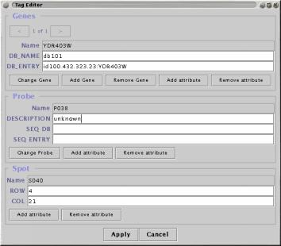

Every Spot in the data has a Spot name an optional Probe name and zero or more Gene names.
Each of these three types of name can have zero or more Name attributes which are extra fields in which you store data associated with the names.
An example might be "ROW" and "COLUMN" attributes for Spot name. Every spot can have a value for each of these attributes and these values can be used in searching and filtering operations. The Name Munger plugin can be used to copy, translate, load and save both names and their attributes. The editor can be used to alter Name Attributes by hand.
Name attributes are useful for storing alternate names or identifiers for Gene and Probe names. You might store "EMBL_ID" and "ACCESSION No." for example. Attributes can also be used to store descriptive information such comments, functional categories, homologue families and so on.

Genes
When the Probe is linked to more than more Gene, use the left and right arrows to select between Genes.
| Change Gene | alter the current gene, enter a new name, or pick from existing names |
| Add Gene | enter a new name, or pick from existing names |
| Remove Gene | removes the current gene |
| Add attribute | adds a new Name Attribute (to all Gene Names) |
| Remove attribute | removes a Name Attribute (from all Gene Names) |
Probe
| Change Probe | enter a new name, or pick from existing names |
| Add attribute | adds a new Name Attribute (to all Probe Names) |
| Remove attribute | removes a Name Attribute (from all Probe Names) |
Spot
| Add attribute | adds a new Name Attribute (to all Spot Names) |
| Remove attribute | removes a Name Attribute (from all Spot Names) |